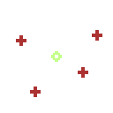
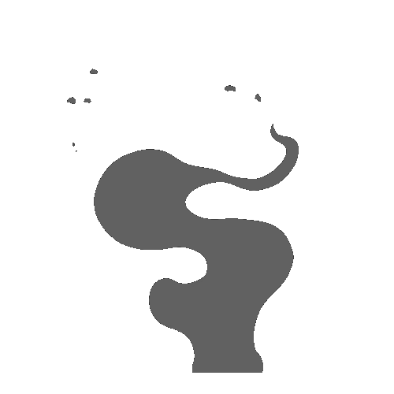
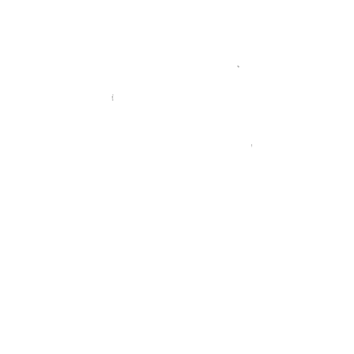
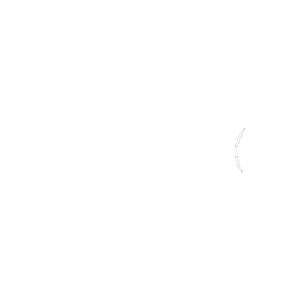
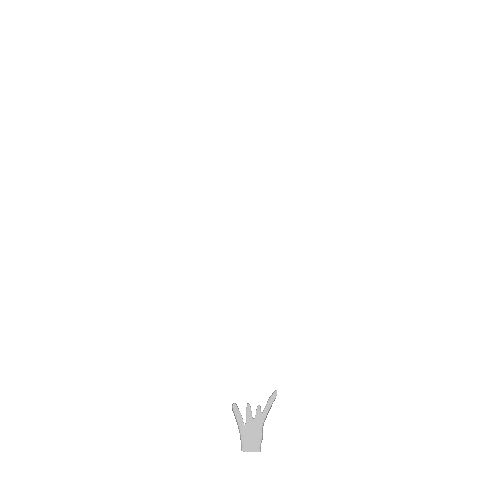
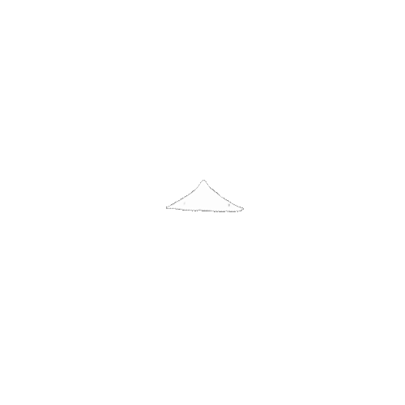
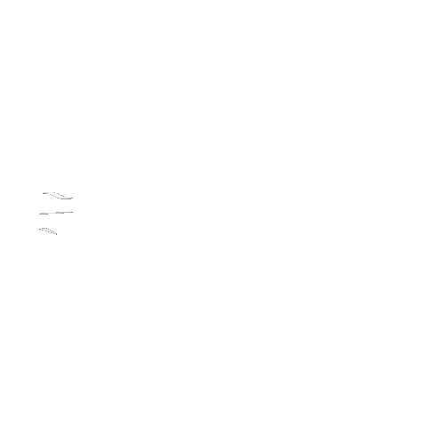
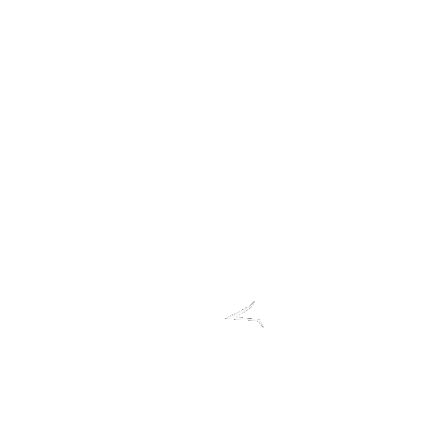
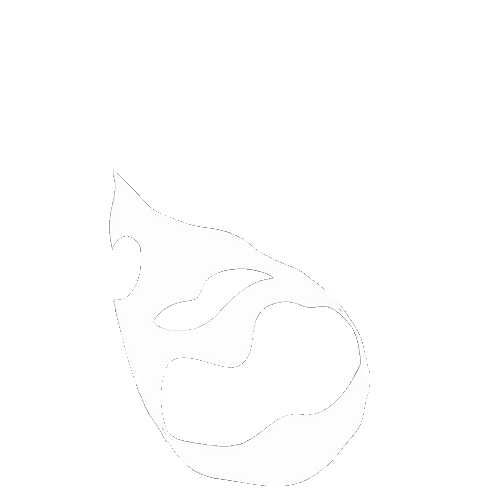

HAND-DRAWN EFFECTS
스프라이트 시퀀스
한 프레임씩 직접 그려 완성한 드로잉 이펙트입니다. Aseprite에서 픽셀을 하나씩 찍은 도트 시퀀스와 Autodesk SketchBook에서 장면마다 손으로 그린 드로잉 시퀀스를 소개합니다.
제작 방식프레임별 수작업 · 스프라이트 시퀀스 드로잉
픽셀을 하나씩 찍어 제작한 프레임 애니메이션입니다.

한 장씩 직접 그려 형태의 변화와 움직임을 만든 이펙트입니다.







